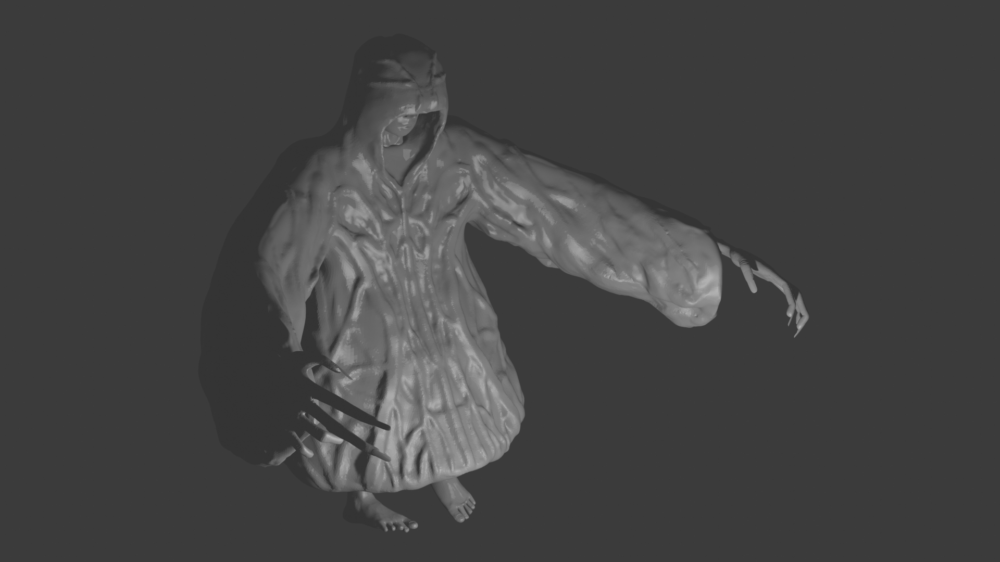
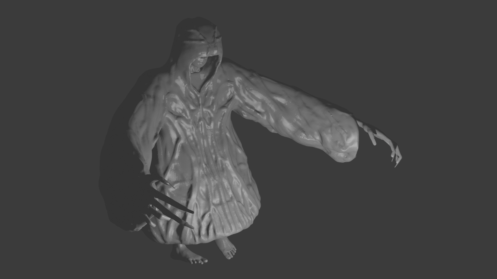

I used watercolor paint on a paper.
Neurographic art a technique, which comprises drawing freeform lines or neuro lines. These are meant to enable the connection between the conscious and unconscious, gaining access to the inner self by using a specific algorithm or method.
I utilized the principles of Color and Emphasis to bring out her vibrant personality and highlight her key features. The use of bold and contrasting colors creates a dynamic energy.
I should use more colors and add more detail to the lines next time.
Fun fact: I'm such a good brother that I will never show this to my sister.
 
